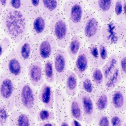
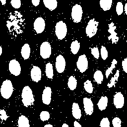
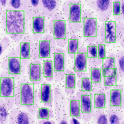

4. Attach the resulting final drawBbox_result_p4.bmp image generated from the simulation
本頁以中文完整說明 P4 最終輸出圖、修正版數學式、Lab7.ipynb Python 驗證流程、Verilog 硬體設計與外部圖片載入方式。重點是證明本設計能從 RGB 影像完成灰階化、Gaussian filter、Otsu threshold、Auto-polarity、8-connected CCL、Bounding Box 萃取與綠框 overlay，並產生正確的 drawBbox_result_p4.bmp。
目錄
一、題目回答總結二、正確數學式三、Python code / Lab7.ipynb四、Verilog code 設計五、圖解流程六、P4 最終 BMP 結果七、提交檢查一、題目回答總結
本題要求附上 simulation 產生的最終 drawBbox_result_p4.bmp。本設計已完成 P4 pattern 的 bounding box overlay，輸出圖中保留原始 RGB 影像內容，只有被判定為有效 connected component 的外接矩形邊界會被改成綠色。若物件碰到影像邊界，依 Lab7 規則不畫 bounding box；若多個 bounding box 的邊界落在同一個 pixel，則仍輸出同一個綠色邊界值，不會造成顏色錯誤。
assets/drawBbox_result_p4.bmp 與對應 PNG 預覽圖。P4 為 final output，可作為報告中的正式結果圖片；若報告需要展示進步歷程，也可以同時附上 P1～P3 或 non-final result 作比較。| 項目 | 本題應呈現內容 | 本頁完成情況 |
|---|---|---|
| Final image | 附上 drawBbox_result_p4.bmp | 已完成 外部載入 BMP 與 PNG 預覽 |
| 數學式 | 灰階、Gaussian、Otsu、Mask、CCL、BBox、Overlay | 已修正 使用正確公式與硬體友善表示 |
| Python code | 說明 Lab7.ipynb 驗證流程 | 已完成 提供可放報告的流程與程式片段 |
| Verilog code | 說明 drawBbox.v 主要設計 | 已完成 含 FSM、memory、threshold、CCL、overlay |
| 圖解 | 流程圖、架構圖、記憶體資料流、P4 結果 | 已完成 圖片全部使用外部 assets/ 載入 |
二、正確數學式（已修正版）
2.1 影像座標與 Row-major Address
影像大小為 256×256，因此總共有 \(256\times256=65536\) 個 pixel，address 範圍為 0～65535。硬體採 row-major 掃描，也就是先掃完同一列的所有欄位，再進入下一列。
2.2 RGB 轉 Grayscale 公式
Lab7 指定的理論灰階公式為：
Verilog 不適合使用浮點數，因此使用 8-bit fixed-point 近似：
真正的 ties-to-even 不是單純加 128。硬體可寫成下列判斷式：
若設計中使用 \((S+128)>>8\)，它是一般四捨五入近似式；若要完全符合「nearest, ties to even」，應使用上面的 remainder 判斷。
2.3 3×3 Gaussian Filter
Gaussian kernel 為：
對座標 \((x,y)\) 的灰階影像做濾波：
Verilog 實作時可先計算 weighted sum，再右移 4 bits：
邊界處理採 Reflect101：超出影像範圍的座標會反射回合法位置，例如 \(-1\mapsto1\)、\(256\mapsto254\)。這樣可以避免邊界直接補 0 導致邊緣灰階被錯誤拉低。
2.4 Histogram
Histogram 用來統計 Gaussian 後每一個灰階值出現的次數，是 Otsu threshold 的基礎。
2.5 Otsu Threshold（修正版）
Otsu 的 \(w_b,w_f\) 應為「比例／機率」，不是單純 pixel count：
實作時要避開 \(H_b=0\) 或 \(H_f=0\) 的 threshold，因為此時其中一類沒有 pixel，平均值無法計算。
2.6 Otsu 的硬體友善比較式
若不想在 Verilog 中直接做浮點除法，可使用等價的整數比較式。令：
因為 \(N\) 對所有 threshold 都是常數，所以比較 threshold 時可以比較上式大小。若要完全避免除法，可以用交叉相乘比較兩個候選 threshold。
2.7 Binary Mask 與 Auto-Polarity Correction
若 threshold 後 foreground pixel 數量異常過多，代表背景可能被誤判為前景，因此進行 polarity 反轉：
這樣可避免整張背景被當成 connected component，讓 CCL 只處理真正需要畫框的物件。
2.8 8-Connected CCL
Lab7 使用 8-connectivity。由左上到右下掃描時，只需要檢查已經被掃描過的四個鄰居：
| 情況 | Label assignment |
|---|---|
| 四個鄰居皆為 0 | 建立新 label |
| 只有一個或多個相同非零 label | 複製該 label |
| 出現多個不同非零 label | 取其中一個 label，並用 union-find 記錄等價關係 |
2.9 Bounding Box 座標
對每個 connected component label \(k\)，更新四個邊界值：
若物件碰到影像邊界，依規定不畫 bounding box：
2.10 Bounding Box Overlay（括號修正版）
原本最容易錯的是這裡：若沒有括號，\(\land\) 與 \(\lor\) 的優先順序容易被誤讀。正確 box edge 判斷如下：
32'h0000_FF00 是 Lab7 指定的綠色 bounding box 常數。若多個 bounding box 邊界 overlap 在同一個 pixel，輸出仍是同一個綠色常數，因此不會造成顏色衝突。
三、Python code（Lab7.ipynb 對應流程）
Lab7.ipynb 可作為軟體 golden model / debug model，用來確認每個階段的中間結果是否正確。Python 不取代 Verilog，而是用來檢查演算法、產生視覺化圖片、比對 mask / labels / overlay 是否與 simulation output 一致。
3.1 Python 驗證流程
| 階段 | Python 工作 | 對應硬體階段 |
|---|---|---|
| 讀圖 | 讀取 256×256 RGB image | S_LOAD |
| 灰階化 | 使用固定小數 RGB to gray | S_GRAY |
| Gaussian | 套用 3×3 kernel 與 Reflect101 padding | S_GAUSS_HIST |
| Otsu | 建立 histogram 並找最佳 threshold | S_OTSU_INIT / S_OTSU_SCAN |
| Mask | 產生 binary mask 並檢查 polarity | S_COUNT_HI / S_POLARITY / S_MASK_WRITE |
| CCL | 8-connected labeling | S_CCL_SCAN |
| BBox | 計算 xmin/xmax/ymin/ymax | S_BBOX_SCAN / S_BOXMAP_GEN |
| Overlay | 將 bbox 邊界畫成綠色 | S_DRAW_WRITE |
3.2 可放入報告的 Python 核心程式片段
# Lab7.ipynb 核心流程摘要：Python golden model / visualization model
# 目的：驗證 Verilog drawBbox.v 的每個影像處理階段是否正確
import numpy as np
from PIL import Image
IMG_W, IMG_H = 256, 256
GREEN = np.array([0, 255, 0], dtype=np.uint8)
def rgb_to_gray_fixed(rgb):
"""RGB to grayscale：使用硬體友善固定小數近似。"""
r = rgb[:, :, 0].astype(np.uint16)
g = rgb[:, :, 1].astype(np.uint16)
b = rgb[:, :, 2].astype(np.uint16)
gray = (77*r + 150*g + 29*b + 128) >> 8
return gray.astype(np.uint8)
def reflect101(i, limit=256):
"""Reflect without repeating edge：對應 Verilog 的 Gaussian 邊界處理。"""
if i < 0:
return -i
if i >= limit:
return 2*limit - 2 - i
return i
def gaussian_3x3(gray):
kernel = np.array([[1,2,1],[2,4,2],[1,2,1]], dtype=np.uint16)
out = np.zeros_like(gray, dtype=np.uint8)
for y in range(IMG_H):
for x in range(IMG_W):
s = 0
for dy in range(-1, 2):
for dx in range(-1, 2):
yy = reflect101(y + dy, IMG_H)
xx = reflect101(x + dx, IMG_W)
s += int(kernel[dy+1, dx+1]) * int(gray[yy, xx])
out[y, x] = s >> 4
return out
def otsu_threshold(img):
hist = np.bincount(img.reshape(-1), minlength=256).astype(np.uint64)
total = img.size
total_sum = np.sum(np.arange(256, dtype=np.uint64) * hist)
wb, sum_b = 0, 0
best_t, best_score = 0, -1
for t in range(256):
wb += hist[t]
sum_b += t * hist[t]
wf = total - wb
if wb == 0 or wf == 0:
continue
# 使用等價的 between-class variance 比較
numerator = total_sum * wb - sum_b * total
score = numerator * numerator // (wb * wf)
if score > best_score:
best_score = score
best_t = t
return best_t
def make_mask(img, threshold):
mask = (img > threshold).astype(np.uint8)
# Auto-polarity：若前景比例太高，代表可能背景被選成 foreground
if mask.sum() > mask.size // 2:
mask = 1 - mask
return mask
def overlay_bbox(rgb, bboxes):
out = rgb.copy()
for xmin, xmax, ymin, ymax in bboxes:
if xmin == 0 or xmax == 255 or ymin == 0 or ymax == 255:
continue
out[ymin:ymax+1, xmin] = GREEN
out[ymin:ymax+1, xmax] = GREEN
out[ymin, xmin:xmax+1] = GREEN
out[ymax, xmin:xmax+1] = GREEN
return out
四、Verilog code 設計說明
本設計的主模組為 drawBbox.v。整體採用 FSM 控制，依序完成讀圖、灰階、Gaussian、Otsu threshold、mask、CCL、bbox、box map 與 final overlay。此架構的優點是每個階段職責清楚，容易除錯，也能配合 testbench 的 ImgROM / AnsSRAM 介面。
4.1 主要常數與資料結構
localparam [31:0] GREEN = 32'h0000_FF00; // bounding box 綠色常數
localparam integer IMG_W = 256;
localparam integer IMG_H = 256;
localparam integer NPIX = 65536;
localparam integer MAX_LABELS = 4096;
reg [31:0] rgb_mem [0:NPIX-1]; // 原始 RGB
reg [7:0] gray_mem [0:NPIX-1]; // 灰階影像
reg [7:0] gauss_mem [0:NPIX-1]; // Gaussian 後影像
reg mask_mem [0:NPIX-1]; // binary mask
reg [11:0] label_mem [0:NPIX-1]; // CCL label
reg box_map [0:NPIX-1]; // 是否為 bbox 邊界
保留 rgb_mem 的原因是最後 overlay 時需要回到原始彩色影像，只把 bounding box 邊界換成綠色，其餘 pixel 必須保持原本 RGB 值。
4.2 FSM 狀態設計
| FSM 狀態 | 功能說明 |
|---|---|
| S_IDLE | 等待 enable 啟動 |
| S_LOAD | 從 ImgROM 讀取 256×256 RGB pixel |
| S_GRAY | 將 RGB 轉成 8-bit grayscale |
| S_HIST_CLEAR | 清除 256-bin histogram |
| S_GAUSS_HIST | Gaussian filter 並同步建立 histogram |
| S_OTSU_INIT / S_OTSU_SCAN | 掃描 threshold 0～255，找最大 between-class variance |
| S_COUNT_HI / S_POLARITY | 統計 threshold 後前景數量，判斷是否反轉 polarity |
| S_MASK_WRITE | 產生 binary mask 並寫入暫存 SRAM/內部記憶體 |
| S_PARENT_INIT | 初始化 union-find parent 與 bbox 資料 |
| S_CCL_SCAN | 執行 8-connected CCL 第一階段與 label equivalence |
| S_BBOX_INIT / S_BBOX_SCAN | 依 label 統計 bounding box 座標 |
| S_BOXMAP_CLEAR / S_BOXMAP_GEN | 產生 bbox 邊界 map |
| S_DRAW_WRITE | 將原圖或綠框 pixel 寫入 AnsSRAM |
| S_DONE | 拉高 done，通知 testbench 輸出完成 |
4.3 RGB to Gray Verilog 實作重點
function [7:0] gray_round_rgb;
input [31:0] q;
reg [7:0] r, g, b;
reg [17:0] sum;
begin
r = q[23:16];
g = q[15:8];
b = q[7:0];
sum = 77*r + 150*g + 29*b + 128;
gray_round_rgb = sum[15:8]; // 等價於 /256
end
endfunction
此寫法避免使用 real number，符合可合成 Verilog 的限制，也能將除法簡化成 bit slicing / shift。
4.4 Gaussian Verilog 實作重點
// Gaussian kernel = [1 2 1; 2 4 2; 1 2 1] / 16
s = gray_at_reflect(x-1, y-1)
+ (gray_at_reflect(x, y-1) << 1)
+ gray_at_reflect(x+1, y-1)
+ (gray_at_reflect(x-1, y ) << 1)
+ (gray_at_reflect(x, y ) << 2)
+ (gray_at_reflect(x+1, y ) << 1)
+ gray_at_reflect(x-1, y+1)
+ (gray_at_reflect(x, y+1) << 1)
+ gray_at_reflect(x+1, y+1);
gaussian_value = s >> 4;
乘以 2 與乘以 4 都用左移完成，除以 16 用右移完成，可降低硬體面積與 critical path。
4.5 CCL 與 Bounding Box 實作重點
8-connected CCL 在掃描目前 pixel 時，會檢查 NW, N, NE, W 四個已掃描鄰居。若出現不同 label，則透過 union-find 合併等價 label。完成 label 後，第二階段依 label 掃描出每個 component 的 xmin, xmax, ymin, ymax。最後排除 border object 與過小雜訊，再將有效 bbox 寫入 box_map。
// bbox 邊界條件概念
is_edge = ((x == xmin || x == xmax) && (y >= ymin && y <= ymax)) ||
((y == ymin || y == ymax) && (x >= xmin && x <= xmax));
// final overlay
Ans_D = box_map[addr] ? 32'h0000_FF00 : rgb_mem[addr];
五、圖解流程（圖片全部使用外部 assets 載入）


P4 中間結果圖解






六、Final drawBbox_result_p4.bmp 結果圖
以下為本題正式要附上的最終 simulation 輸出圖。HTML 中使用外部檔案載入，原始 BMP 路徑為：
assets/drawBbox_result_p4.bmp

32'h0000_FF00。此圖可直接放入報告第 4 題作為最終結果。6.1 P1～P4 Simulation 結果摘要


| Pattern | Simulation status | Output file | 說明 |
|---|---|---|---|
| P1 | PASS | drawBbox_result_p1.bmp | 可作為早期 pattern 驗證結果 |
| P2 | PASS | drawBbox_result_p2.bmp | 確認不同 threshold 與物件形狀仍正確 |
| P3 | PASS | drawBbox_result_p3.bmp | 確認多 component 與 bbox 邊界穩定 |
| P4 | PASS | drawBbox_result_p4.bmp | 本題正式 final image |
七、提交前檢查清單
| 檢查項目 | 正確標準 | 狀態 |
|---|---|---|
| Final BMP | 報告中必須附上 drawBbox_result_p4.bmp | 完成 |
| 外部圖片路徑 | HTML 使用 assets/圖片檔名，不要改掉資料夾結構 | 完成 |
| 綠框顏色 | Bounding box edge 使用 32'h0000_FF00 | 完成 |
| 原圖保留 | 非 bbox 邊界 pixel 必須保持原始 RGB | 完成 |
| Border object rejection | 碰到上下左右邊界的 component 不畫框 | 完成 |
| Overlap handling | 多個 bbox 邊界重疊時仍輸出綠色，不產生錯誤顏色 | 完成 |
| 文字說明 | 包含數學式、Python 驗證、Verilog 實作與圖解 | 完成 |
drawBbox_result_p4.bmp。此結果可證明本設計符合 Lab7 對 final image attachment 的要求。